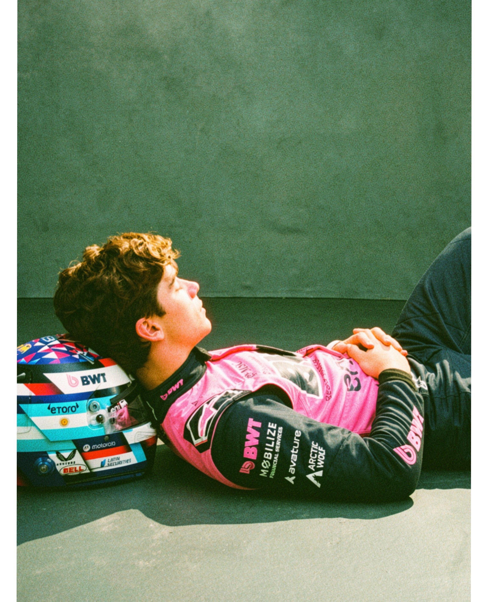
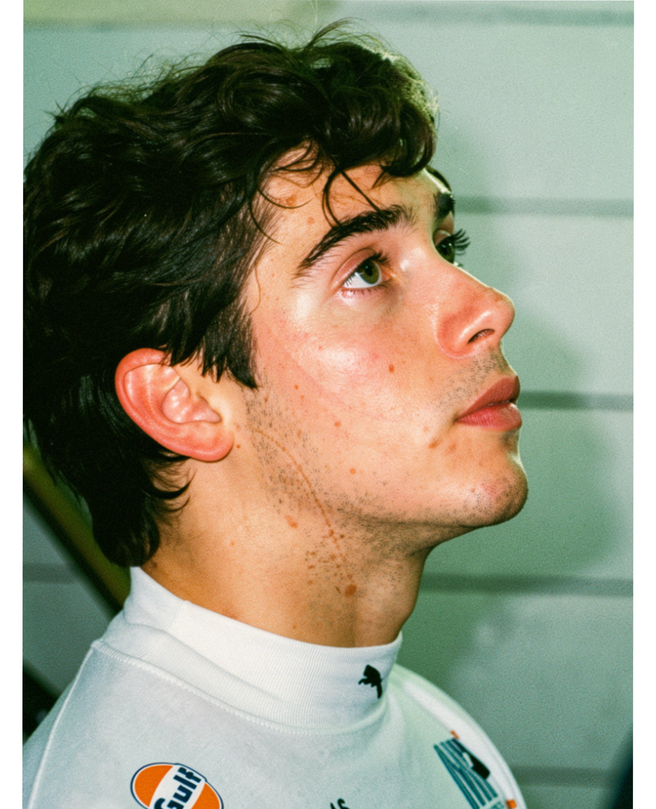
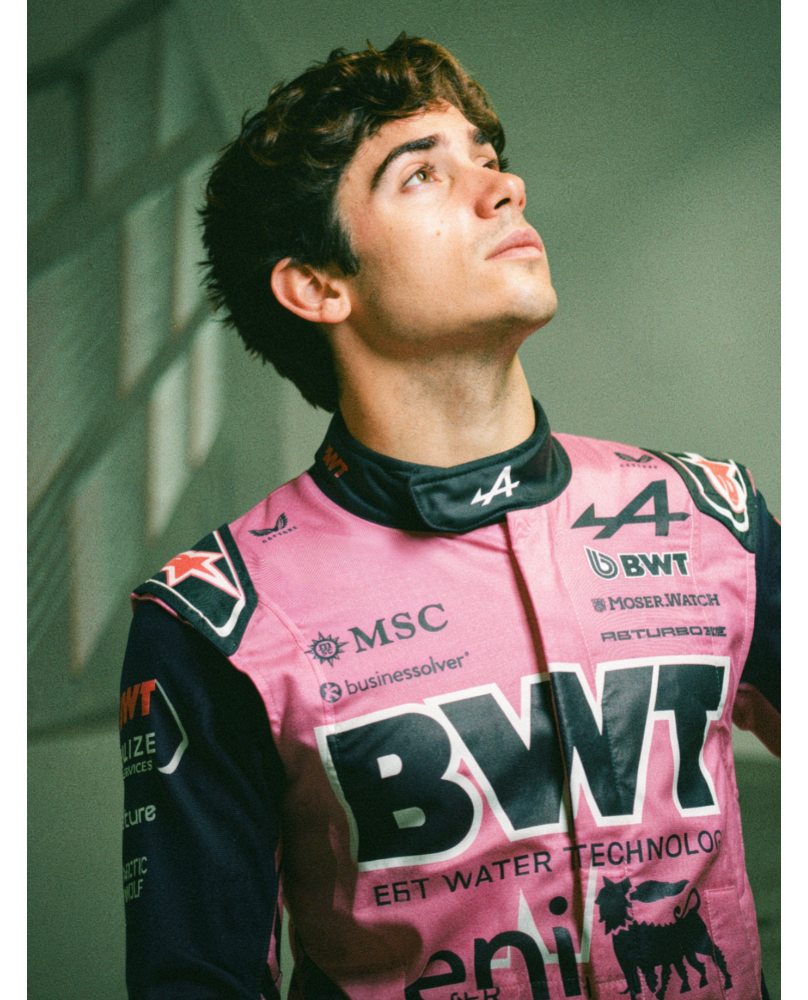

Nacido el 27 de mayo de 2003 en Pilar, Buenos Aires, Franco arrancó en el karting a los 9 años y rápido se hizo notar a nivel nacional. En 2018 dio el salto a Europa y al año siguiente se consagró campeón de la Fórmula 4 Española con una temporada de 11 victorias.

Entre 2020 y 2021 compitió en Fórmula Renault Eurocup, Toyota Racing Series y también en resistencia (WEC). En 2022 debutó en Fórmula 3, logró una victoria en Imola y en 2023 cerró 4° en el campeonato. Ese mismo año entró a la Academia de Williams Racing. En 2024 subió a Fórmula 2 y, gracias a su trabajo y la confianza depositada en él, hizo su debut en la F1 a mitad de temporada y consiguió sumar los primeros puntos en Azerbaiyán.

En 2025 se sumó a Alpine como piloto reserva y pasó a ser titular para el Gran Premio de Emilia-Romagna llevado a cabo en mayo.
Actualmente Franco Colapinto se desempeña como piloto titular del equipo Alpine F1 Team, lleva sumados 6 puntos y se afianza en la categoría.